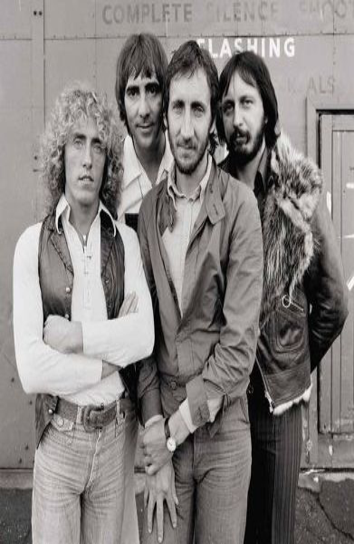
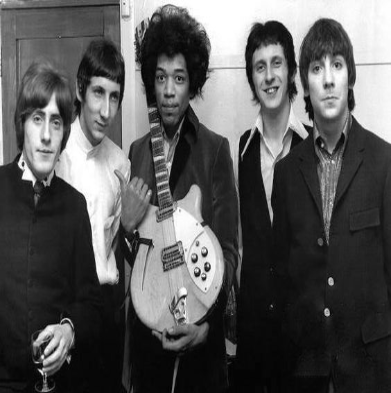
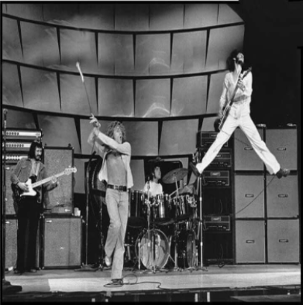
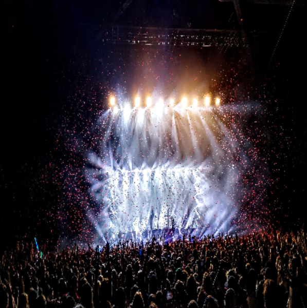
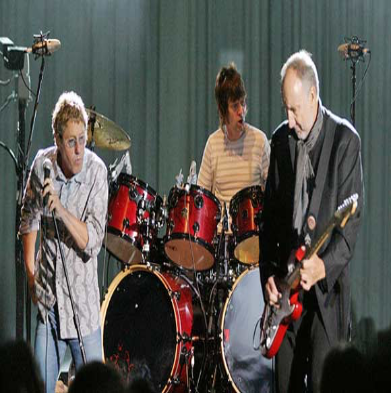

The band from left to right: Rodger Moon, Keith Townsend, Pete Entwhistle and John Daltry (London,1980)

The Whom and Bobbi Hendrix (The Canvern,1969)

The Whom live at the BBC Performing "I can explain" for the first time (BBC studios,1963)

Live at the Island of Wight fesitval performing for the new generation of mods (Isle of Wight,2016)Rodger and Keith still rocking at a festival in Spain (El festival de musica,1980)

Performing at a Wedding recpetion